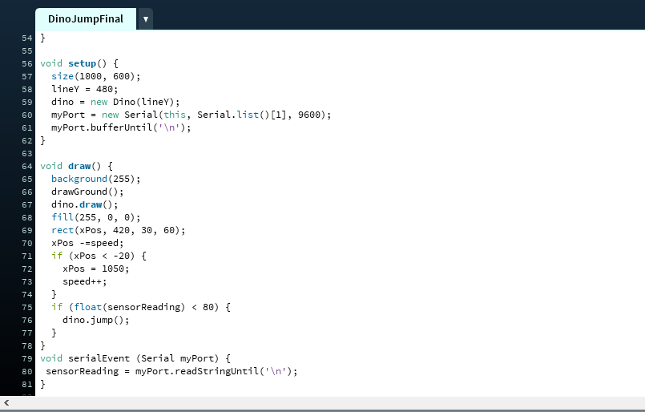

RESEARCH
Camille Utterback’s artworks
Official Website: http://camilleutterback.com/
Camille Utterback is an interactive artist who created several interactive installations in the past two decades. Some of her projects are integrated in the public spaces and they represent the bridge between physical bodies and the digital realm.
Among the projects that most grasped my attention, I think it’s worth mentioning her collaboration with Romy Achituv, “Text Rain” created in 1999. Here is the link to the video: https://www.youtube.com/watch?v=f_u3sSffS78
Participants can play and interact with letters falling from the “sky” through their projected figure on the screen. The letters respond to their movements. The engaging part is that sometimes it’s even possible to collect certain letters to then create a whole word.
I love how this projects connects art, technology and poetry while engaging its participants with a playful and simple interface.
Abundance is a public installation by Camille Utterback and it’s placed in the city hall square in San Jose, California. Through a video camera, pedestrians’ movements are detected and then projected real time on a building’s wall, creating a playful and dynamic response to people’s motion.
Here is the video:
youtube.com/watch?v=xgRFUsVVb84
What is very fascinating in both projects is the translation of regular humans’ behaviours into digital signals. Not only do these installations enhance the urban area, but they also enhance people’s day life.
Interactive Bench by Nunoerin
https://www.youtube.com/watch?v=DHY5kpGTsDE https://www.nunoerin.com/
Experience: https://www.youtube.com/watch?v=03TTaO-q1GU
The interactive bench displays lights when approached by physical moving forms and its lights move according to the entity’s movement. It’s a simple project that engaged both young and old people.
What I like about this experience is that it allows people to reconsider regular objects and finding them entertaining, rather than still, boring objects.
Somehow, this bench gives people the chance to spend more time outdoor, maybe engaging with people and playing together. It might even give busy men who walk by the bench a minute or two to stop thinking about their busy agenda and dedicate a moment to amusing themselves with this random object.
I’d love to create something so simple yet so engaging and artsy.
https://www.architectmagazine.com/technology/products/object-of-the-moment-the-mobius-bench-by-3form-and-louis-lim_o
Similarly, Louis Lim created an interactive bench programmed to intensify the LEDs whenever or wherever a human interacts with it/sits on it.
Here is the video:
https://www.youtube.com/watch?v=prLBsLChUHs
Swarm Light by Random International
Official website: https://archello.com/project/swarm-light
Random International’s works are based on natural elements connecting with the digital world. For instance, Swarm Light emulates the migratory pattern of a group of birds activated by sounds produced by the visitors at the exhibition.
Here is the video of the above-mentioned experience: https://www.youtube.com/watch?v=ajV8A5Y2_dE
video: https://softologyblog.wordpress.com/2019/12/28/3d-cellular-automata-3/
Here in the link above, it’s explained how to apply Cellular Automata into 3D space, and how the rules work. It’s fairly based on “Game of Life”, although it’s upgraded to 3D, while John Conway’s creation was 2D.
I find Cellular Automata mesmerizing and extremely eye-catching as it resembles life with its birth, survival and death state of cells’ life. I’d love to try out something in this field, although it looks as complex as fascinating.
TINKERING
DEMO 1: FINGERS RACING TRACK
For my first demo I decided to create a racing game with capacitive touch system. I created the setting and drew lines using graphite as conductor sensor for this exercise. I wanted to incorporate Processing, so I created a screen that shows the text "you win" when the line is touched.
The video:
In the video, I tested my game with my boyfriend, who found out, thanks to this game, that his left hand fingers are faster than the right hand ones.
Screenshots of the code:
here is the drawing I made for the circuit:
The main reason why I drew more than one line with graphite, is that I wanted to add different reaction on processing according to where the fingers were touching. However, I ended up spending more time than expected on this demo, therefore I limited it to only one capacitive touch.
What I learned with this tinlering phase, is how to apply text and response on Processing trhough capacitive touch/Arduino. This helped me understanding a bit better Processing, which was a huge mystery to me until today. I'm considering now to use it for my final design of this challenge.
DEMO 2: "HEY ARDUINO: TO BE OR NOT TO BE?"
My second demo was made solely with Arduino and it'a playful yet useful tool for people like me who can't choose/need answers/are anxious or whatever.
Arduino finally finds the answers for you, and it shows them through its most beautiful feature: lights.
RED LIGHT: NO
GREEN LIGHT: YES
Here is how it works:
Link to the video of my second demo:
https://youtu.be/vIikeCCuMsA
Screenshot of the code, where also the randomized lights, change of tune and button spplications are displayed:
First:
Second:
Third:
A characteristic that needs to be mentioned is the presence of specific sounds for the two different answers. For the green light (positive answer) the sound ends with a higher note, resulting more optimistic, while the NO answer ends with a lower note, highlighting a darker, more negative outcome. These details make the whole experience more pleasing.
I think it's interesting to see how a plant can embody a real character when provided with a facial expression. I think this demo is relevant to show how diverse and versatile technology is and how anything can be used for this purpose.
DEMO 3: DRINKING POINTER GAME
For this last phase of my tinkering I made a fun game, a drinking game!
I created this demo game thinking about how playful it could be if used when gathering with friends and having some drinks together. It makes a sound when the button is pressed and the pointer is shaped as a hand.
Screenshots of codes:
And some extra images of the prototype, where you can also see the servomotor used to support the pointer:
I loved working on this playful solution and making the hand, the tiny box with aethetics on it and the sound. I can't wait to use it for real!
DESIGN AND BUILD
JUMP MY FRIEND, JUMP!
My final concept is a game made on Processing that works with Arduino Proximity Sensor. When the main character encounters an obstacle along the way, the player needs to physically jump to overpass it.
Here is the video:
The proximity sensor needed to reach high locations, therefore I extended the wired by attaching them to each other. Moreover, I adapted the code so that the speed increases after every enemy has been jumped over. The initial idea was to try it with the projector, but I made it during daytime and couldn’t find a place with no light (only the bathroom, but it wouldn’t worked as I wished :D ).
Here are the codes from both Processing and Arduino:
REFLECTION
Adding playful interactions to humans’ routine has the same effect of music or arts in our lives: it makes it batter, it gives us a sense of pleasure and enjoyment. Coming across playful interaction when going to work, for example, might change your day for the better, even if the interaction is small and simple, it just gives you that extra spark of joy and engagement that we usually forget during adulthood.
I believe playful technology, especially the one applied into public spaces, is the heart that connect arts, technology and psychology and I’m looking forward to seeing how this field will improve and how it will shape our lives and our planet in a few decades.
Playful interactions are also educative, they motivate users to do, think, move and they remind us of the importance of interacting and being curious, as curiosity is what makes us evolve.
My final concept is an interactive game that could be projected on a public wall in the city centre and be interacted by random people. Just place the proximity sensor at a good height and you’ll see hundreds of people jumping to avoid the obstacles in the game.
This could even generate a sense of community and friendships among pedestrians who are sharing a playful moment together. The game I created entertains its gamers both physically and mentally and it has a dynamic feature since its speed increases over the time, resulting in a more challenging experience. I can think of so many changes that could be applied to the game to make it even more fun: different sensors, shooting games, running, etc. I think as a quickly made prototype for this course, it works perfectly and I’m proud of its final look.
I can envision this experience being placed in a contemporary interactive museum, where visitors start playing with it while walking through the gallery. It’s fun and creative, and I think anyone would love interacting with it. My first research finding, "Text Rain" inspired me to create this experience.
In order to make it work, I followed a tutorial/code posted in a forum and I adjusted it to my preferences. Adapting the code to my needs was actually very hard and I spent days trying to make it work. Initially I had in mind the T-Rex game from Chrome, however it was very hard to recreate and I decided to go for something easier.
I also tried to include collision into my code but after a few attempts I gave up. Working with Processing is super difficult at times, also because many tutorials are for P5.js which is a similar language used for a lot of online games, hence I had to translate a lot of parts into Java/Processing language which took time and motivation away.
Finally, connecting it with sensorReading was a bit easier as I was already familiar with its function, from the workshops. It has Arduino, it has dynamicity, it has Processing, sensors and physical involvement from users. I think it‚Äôs good to go and I‚Äôm super-duper happy with the final result! üòä